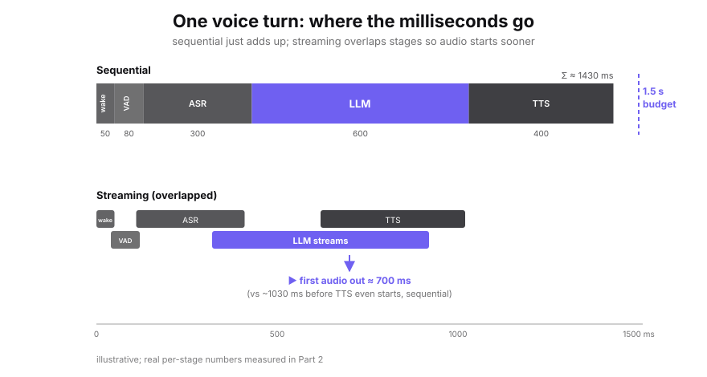

Almost everything written about LLM inference quietly assumes a datacenter. Elastic memory, hundreds of gigabytes per second of bandwidth, batches of thousands of requests amortizing every weight read, a power budget measured in kilowatts. Move the same model onto a phone, a Jetson, or a microcontroller and the assumptions invert one by one. You cannot scale out. You cannot batch – there is one user, and they are waiting. The chip throttles after thirty seconds because there is no fan. The weights do not fit.
Edge inference is not cloud inference scaled down. It’s a different regime with a different bottleneck, and the techniques that win are tuned to it. This series is about that regime. This first part draws the map: the constraints that define the edge, the single piece of physics that governs the whole stack, the vocabulary we will measure everything against, and a survey of the three layers (hardware, runtime, model) where the real decisions get made. Later parts replace every borrowed number here with the one I measured myself.
1. The Five Constraints That Define "Edge"
Everything downstream follows from five constraints. Each is the inverse of a luxury the cloud takes for granted.
Device RAM is fixed and shared with the OS and the rest of the app. A model only runs if its weights fit. A 7B model needs ~14 GB at FP16 but only ~3.5 GB at 4-bit, on an 8 GB phone, quantization is what decides whether the model loads at all, not a nice-to-have speedup.
Once a model fits, the speed limit is how fast its weights stream from DRAM into the compute units. Generating one token reads every weight once but does only ~2 ops per weight. Compute finishes long before the next weights arrive.
Edge devices run on a battery and cool passively. Performance you can hit for one burst is not performance you can sustain. After the SoC heats up, clocks drop and your latency quietly doubles. A benchmark that runs cold looks great and ships broken.
There is no network round-trip to hide behind and a human on the other end. Interactive work lives under hard budgets: a voice turn that feels instant has a few hundred milliseconds total for the whole pipeline.
Often the entire reason to be on-device: the data never leaves, and it works in a tunnel with no signal. This is a product constraint that forces all the engineering ones above.
The device spectrum, from constrained to capable:
Raspberry Pi 5 sits below this spectrum at ~17 GB/s, pure CPU, no GPU offload for matmul.
2. The Governing Physics: One Equation for the Whole Stack
The thesis everything else rests on: single-stream LLM decoding is bound by memory bandwidth, not by compute. With that in hand, most of the edge toolkit stops looking like a grab-bag of tricks and starts looking like a single idea applied in different places.
Why decode is memory-bound.Generate one token at batch size one, and the forward pass must read every weight in the model exactly once to produce that single token. The arithmetic per weight is tiny, one multiply-accumulate, about 2 floating-point operations. Define arithmetic intensity as useful work per byte moved:
Place that on the roofline (Williams, Waterman & Patterson, 2009). Attainable performance is min(peak compute, intensity × bandwidth). Modern accelerators have a ridge point, the intensity at which compute and bandwidth balance, that sits in the tens to low hundreds of FLOP/byte. Single-stream decode, at ~1–4 FLOP/byte, sits far to the left of that ridge: deep in the bandwidth-limited region. The expensive silicon for matrix math mostly idles, waiting on DRAM.
In the bandwidth-limited region, the achievable lower bound on per-token latency is just:
A worked example (published specs only, I’ll measure the real gap in Part 2): Take a 1.7B-parameter model on a device with ~100 GB/s of LPDDR5 bandwidth.
| Precision | Weight bytes | ÷ 100 GB/s | Ceiling |
|---|---|---|---|
| FP16 (2 B/param) | ~3.4 GB | ~34 ms/token | ~29 tok/s |
| INT4 (0.5 B/param) | ~0.85 GB | ~8.5 ms/token | ~118 tok/s |
Two things follow. First, quantizing FP16 to INT4 moves 4× fewer bytes and buys ~4× faster decode, in this regime. Second, these are ceilings, you never hit peak bandwidth (60–80% is typical), KV-cache reads add traffic as context grows, and the OS competes for the same bus. The gap between this clean number and what you actually measure on hardware is what Part 2 is about.
3. The Vocabulary: What We Measure, and What It Means
Every later part in this series reports these metrics. It is worth pinning them down once up front.
Time to first token. Wall-clock from request to first output token. In a pipeline it's a sum, in a voice cascade, "first token" is really first audio out, and TTFT is the sum of every upstream stage.
Time per output token. Time between successive tokens once generation is flowing. This is the memory-bound number from Sec. 2. TTFT and TPOT are different costs and must be reported separately.
Tokens per second, sustained. On the edge, "sustained" is the word that matters. A cold-start burst number tells you nothing about steady-state performance after thermal throttling kicks in.
Maximum resident set. Weights + KV cache + activations + runtime overhead. This is what determines fits/doesn't fit against the Sec. 1 memory ceiling.
Joules per token (or mWh per turn). On battery this matters as much as latency. A model that is fast but draws 3W kills a session in minutes.
How long until clocks drop. How long until sustained load forces a clock reduction, and what latency looks like after that. A benchmark that runs cold ships broken.
4. Layer 1: The Hardware
The compute on an edge SoC is heterogeneous, and each unit wins at something different. Understanding which unit handles which workload, and the tradeoffs of each, is the first hardware decision.
CPU: flexible, great for control flow and the messy glue (audio framing, tokenization, sampling). Lowest throughput for dense matmul. Tradeoff: universal and simple, but leaves performance on the table for the heavy tensor work.
GPU: strong parallel throughput, the common target for on-device LLM matmuls via Metal/Vulkan/OpenCL. Tradeoff: good general accelerator, but shares the same DRAM bus. Sec. 2 still rules.
NPU/DSP: purpose-built for dense low-precision matmul at very high perf-per-watt. Tradeoff: fastest and most efficient when the op maps cleanly, and brutal when it doesn’t. Dynamic shapes, unusual ops, and control flow fall back to CPU and erase the win.
The device spectrum (placing Sec. 1 on real silicon): microcontrollers (Cortex-M, kB of SRAM; TinyML territory) to phone SoCs (Snapdragon/Tensor/Apple, unified LPDDR, dedicated NPU) to Apple Silicon (large unified memory, high memory bandwidth) to Jetson-class modules (discrete-GPU like, tens of GB/s). The same model is a different engineering problem at each stop. And they don’t all carry the same kinds of compute: a Raspberry Pi is effectively CPU-only, most laptops are CPU+GPU, and phones reliably add an NPU/DSP, so “which unit runs what” is device-specific, not a fixed rule.
5. Layer 2: The Runtime / Engine
Between a model file and a token sits the inference engine, and it does far more than "run the math." Graph compilation folds many small ops into fewer fused kernels, cutting memory round-trips. Delegate selection routes each op to CPU, GPU, or NPU and picks a kernel for the shapes and precision. Memory planning pre-allocates a reusable arena so inference doesn't allocate on the hot path. KV-cache management stores past keys and values so decode is incremental, and on the edge, its growth with context is a real share of both memory and bandwidth.
6. Layer 3: The Model and Compression
This is the layer with the most levers, and Sec. 2 tells you which ones actually move latency. Because decode is memory-bound, anything that reduces bytes-per-weight is a direct, proportional speed multiplier.
Quantization is the headline edge technique, fundamentally a bandwidth decision. Fewer bits per weight means fewer bytes moved per token, which Sec. 2 turns directly into speed and into fitting the Sec. 1 ceiling at all. PTQ (post-training quantization) is cheap and fast; QAT (quantization-aware training) is costlier but better at low bit-widths. Common formats include GGUF k-quants (e.g., Q4_K_M) for llama.cpp, NF4 from QLoRA, weight-only PTQ via GPTQ and AWQ, and activation handling via LLM.int8() and SmoothQuant. The honest cost: quality degrades as bits drop, unevenly across tasks, reasoning and rare tokens suffer first. The 4x speedup is real; so is the loss. Measure it; a later part does.
Distillation and pruning train a small student model to mimic a larger teacher and remove weights or structure, shrinking model bytes directly. Efficient architectures like MobileLLM are sub-billion parameter LLMs designed for devices; Mamba and SSM-hybrid models trade quadratic attention for linear-time recurrence, cutting the KV-cache and long-context bandwidth tax. Memory-mapping streams weights from flash when they exceed RAM (Apple's LLM in a flash), trading bandwidth and latency for footprint.
7. Following a Single Voice Turn Through the Stack
The pipeline below is a representative on-device cascade, the standard pattern shared by voice assistants generally, not any specific product. Stage timings are illustrative until the measured parts.
Everything above sits in isolation until you wire it into a real product, and the clearest example is an on-device voice assistant, because it isn’t one model, it’s a little pipeline of them. Your latency budget is just whatever they add up to. One voice turn flows like this:
Each component spends a slice of the Sec. 3 budget, and each one is shaped by the choices from Sec. 4- 6. The wake-word and VAD models are tiny and always listening, so on a phone they sit on the NPU/DSP or else CPU, while on a Pi or laptop they’d just run on the CPU (Sec. 4). STT and the LLM are the heavy stages: this is where your quantization and runtime picks (Sec. 5-6) decide whether the thing even fits in memory. TTS time-to-first-audio is what the user actually feels as “did it answer me?”

The wake-word and VAD models are tiny and always listening, on a phone they sit on the NPU/DSP or CPU, while on a Pi or laptop they run on CPU. STT and the LLM are the heavy stages: this is where your quantization and runtime picks decide whether the thing fits in memory at all. TTS time-to-first-audio is what the user actually feels as "did it answer me?"
In a pipeline, TTFT is not a single number; it is a sum. "First audio out" only happens once every upstream stage has done its part, so your slowest box sets the experience, and the Sec. 2 memory-bound physics runs underneath all of them.
8. What's Next
This part gave you the map and the one equation that ties it together. The map is worth little without the territory, so the rest of the series goes measured. Part 2 starts where Sec. 2 ended: how far does a real runtime fall from the roofline ceiling, and why, TTFT and its pipeline decomposition, TPOT, throughput, peak memory, energy per token, and the thermal throttle point, all with p50/p95, stated device, stated quant, and stated sequence length.